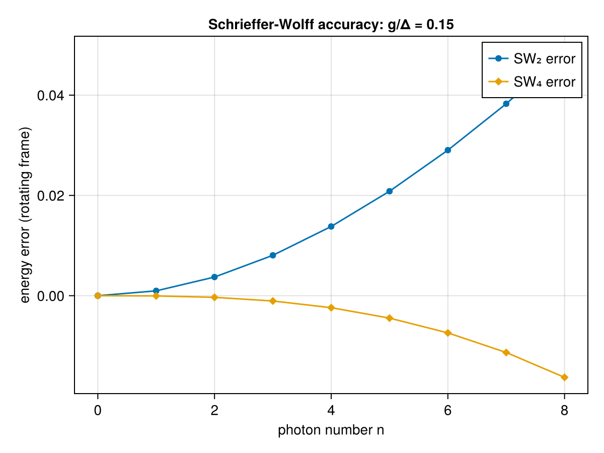

Schrieffer-Wolff Transformation
The Schrieffer-Wolff transformation is a perturbative unitary transformation that block-diagonalises a Hamiltonian order by order in a small parameter. It is widely used to derive effective low-energy Hamiltonians –- for example the dispersive Hamiltonian of circuit QED from the Jaynes-Cummings model.
Given a Hamiltonian $H = H_0 + V$ split into a solvable diagonal part $H_0$ and a small off-diagonal perturbation $V$, one seeks an anti-Hermitian generator $S$ so that the transformed Hamiltonian $\tilde{H} = e^{S} H\, e^{-S}$ is block-diagonal. Expanding the Baker-Campbell-Hausdorff series and choosing $S$ order by order to cancel off-diagonal terms, the effective Hamiltonian becomes
\[H_{\mathrm{eff}} = H_0 + \tfrac{1}{2}[S_1, V] + \tfrac{1}{2}[S_2, V] - \tfrac{1}{24}[S_1,[S_1,[S_1,V]]] + \mathcal{O}(g^6),\]
where $[S_n, H_0]$ cancels the off-diagonal piece at order $2n-1$ in the coupling $g$.
In this example we carry out the transformation symbolically with SecondQuantizedAlgebra.jl, deriving both the dispersive shift $\chi$ (second order) and the Kerr nonlinearity $K$ (fourth order).
Setup
We consider a single cavity mode coupled to a two-level atom (Jaynes-Cummings model). Working in the interaction picture with respect to the cavity frequency $\omega_c$, the only energy scale in $H_0$ is the detuning $\Delta = \omega_a - \omega_c$. This eliminates $\omega_c$ from all intermediate expressions and keeps the algebra clean.
using SecondQuantizedAlgebra
hc = FockSpace(:cavity)
ha = NLevelSpace(:atom, (:g, :e))
h = hc ⊗ ha
@qnumbers a::Destroy(h, 1)
σge = Transition(h, :σ, 1, 2, 2) # |g⟩⟨e| (lowering)
σeg = Transition(h, :σ, 2, 1, 2) # |e⟩⟨g| (raising)
σee = Transition(h, :σ, 2, 2, 2) # |e⟩⟨e| (excited-state projector)
@variables g Δ\[ \begin{equation} \left[ \begin{array}{c} g \\ \Delta \\ \end{array} \right] \end{equation} \]
Jaynes-Cummings Hamiltonian (interaction picture)
In the rotating-wave approximation the Hamiltonian splits into:
\[H_0 = \Delta\, |e\rangle\!\langle e|, \qquad V = g\bigl(a^\dagger |g\rangle\!\langle e| + a\, |e\rangle\!\langle g|\bigr).\]
H0 = Δ * σee
V = g * (a' * σge + a * σeg)\[g a{\sigma}^{{21}} + g a^{\dagger}{\sigma}^{{12}}\]
Second order: dispersive shift
The first-order generator satisfies $[S_1, H_0] = -V$. For the Jaynes-Cummings interaction the solution is:
\[S_1 = -\frac{g}{\Delta}\bigl(a^\dagger |g\rangle\!\langle e| \;-\; a\,|e\rangle\!\langle g|\bigr).\]
S1 = -(g / Δ) * (a' * σge - a * σeg)\[\left(\frac{g}{\Delta}\right) a{\sigma}^{{21}} + \left(\frac{ - g}{\Delta}\right) a^{\dagger}{\sigma}^{{12}}\]
We can verify that the defining equation is satisfied exactly:
commutator(S1, H0) + V\[\]
The second-order effective Hamiltonian is $H_0 + \tfrac{1}{2}[S_1, V]$:
H_eff = H0 + commutator(S1, V) / 2\[\left(\frac{g^{2}}{\Delta} + \Delta\right) {\sigma}^{{22}} + \left(\frac{ - g^{2}}{\Delta}\right) a^{\dagger}a{\sigma}^{{11}} + \left(\frac{g^{2}}{\Delta}\right) a^{\dagger}a{\sigma}^{{22}}\]
Reading off the result, we identify the dispersive shift $\chi = g^2/\Delta$: the cavity frequency shifts by $\pm\chi$ depending on the qubit state ($|g\rangle$ vs $|e\rangle$), enabling dispersive readout of superconducting qubits.
Fourth order: Kerr nonlinearity
At third order in $g$ the transformed Hamiltonian acquires off-diagonal terms $B \equiv [S_1, [S_1, V]]$:
B = commutator(S1, commutator(S1, V))\[\left(\frac{ - 4 ~ g^{3}}{\Delta^{2}}\right) a{\sigma}^{{21}} + \left(\frac{ - 4 ~ g^{3}}{\Delta^{2}}\right) a^{\dagger}{\sigma}^{{12}} + \left(\frac{ - 4 ~ g^{3}}{\Delta^{2}}\right) a^{\dagger}aa{\sigma}^{{21}} + \left(\frac{ - 4 ~ g^{3}}{\Delta^{2}}\right) a^{\dagger}a^{\dagger}a{\sigma}^{{12}}\]
These are cancelled by a second generator $S_2$ satisfying $[S_2, H_0] = -B/3$:
\[S_2 = \frac{4g^3}{3\Delta^3}\bigl( a^\dagger |g\rangle\!\langle e| - a\, |e\rangle\!\langle g| + a^\dagger a^\dagger a\, |g\rangle\!\langle e| - a^\dagger a\, a\, |e\rangle\!\langle g| \bigr).\]
Note how $S_2$ contains terms with three ladder operators –- these generate photon-number-dependent corrections.
S2 = ((4 // 3) * g^3 / Δ^3) * (a' * σge - a * σeg + a' * a' * a * σge - a' * a * a * σeg)\[\left(\frac{ - \frac{4}{3} ~ g^{3}}{\Delta^{3}}\right) a{\sigma}^{{21}} + \left(\frac{\frac{4}{3} ~ g^{3}}{\Delta^{3}}\right) a^{\dagger}{\sigma}^{{12}} + \left(\frac{ - \frac{4}{3} ~ g^{3}}{\Delta^{3}}\right) a^{\dagger}aa{\sigma}^{{21}} + \left(\frac{\frac{4}{3} ~ g^{3}}{\Delta^{3}}\right) a^{\dagger}a^{\dagger}a{\sigma}^{{12}}\]
The fourth-order diagonal correction involves two pieces:
comm_S2_V = commutator(S2, V)\[\left(\frac{ - \frac{8}{3} ~ g^{4}}{\Delta^{3}}\right) {\sigma}^{{22}} + \left(\frac{\frac{8}{3} ~ g^{4}}{\Delta^{3}}\right) a^{\dagger}a{\sigma}^{{11}} + \left( - \frac{\frac{4}{3} ~ g^{4}}{\Delta^{3}} + \frac{ - \frac{4}{3} ~ g^{4}}{\Delta^{3}} - \frac{\frac{8}{3} ~ g^{4}}{\Delta^{3}} + \frac{ - \frac{8}{3} ~ g^{4}}{\Delta^{3}}\right) a^{\dagger}a{\sigma}^{{22}} + \left(\frac{ - \frac{8}{3} ~ g^{4}}{\Delta^{3}}\right) a^{\dagger}a^{\dagger}aa{\sigma}^{{22}} + \left(\frac{\frac{8}{3} ~ g^{4}}{\Delta^{3}}\right) a^{\dagger}a^{\dagger}aa{\sigma}^{{11}}\]
C = commutator(S1, B)\[\left(\frac{ - 8 ~ g^{4}}{\Delta^{3}}\right) {\sigma}^{{22}} + \left(\frac{8 ~ g^{4}}{\Delta^{3}}\right) a^{\dagger}a{\sigma}^{{11}} + \left(\frac{ - 4 ~ g^{4}}{\Delta^{3}} - \frac{8 ~ g^{4}}{\Delta^{3}} + \frac{ - 8 ~ g^{4}}{\Delta^{3}} - \frac{4 ~ g^{4}}{\Delta^{3}}\right) a^{\dagger}a{\sigma}^{{22}} + \left(\frac{ - 8 ~ g^{4}}{\Delta^{3}}\right) a^{\dagger}a^{\dagger}aa{\sigma}^{{22}} + \left(\frac{8 ~ g^{4}}{\Delta^{3}}\right) a^{\dagger}a^{\dagger}aa{\sigma}^{{11}}\]
These combine into the fourth-order effective Hamiltonian via $H_{\mathrm{eff}}^{(4)} = H_{\mathrm{eff}}^{(2)} + \tfrac{1}{2}[S_2, V] - \tfrac{1}{24}[S_1, B]$:
H_eff_4 = H_eff + comm_S2_V // 2 - C // 24\[\left(\frac{g^{2}}{\Delta} + \frac{ - \frac{4}{3} ~ g^{4}}{\Delta^{3}} + \frac{\frac{1}{3} ~ g^{4}}{\Delta^{3}} + \Delta\right) {\sigma}^{{22}} + \left(\frac{\frac{4}{3} ~ g^{4}}{\Delta^{3}} + \frac{ - \frac{1}{3} ~ g^{4}}{\Delta^{3}} + \frac{ - g^{2}}{\Delta}\right) a^{\dagger}a{\sigma}^{{11}} + \left(\frac{g^{2}}{\Delta} - \frac{1}{24} ~ \left( \frac{ - 4 ~ g^{4}}{\Delta^{3}} - \frac{8 ~ g^{4}}{\Delta^{3}} + \frac{ - 8 ~ g^{4}}{\Delta^{3}} - \frac{4 ~ g^{4}}{\Delta^{3}} \right) + \frac{1}{2} ~ \left( - \frac{\frac{4}{3} ~ g^{4}}{\Delta^{3}} + \frac{ - \frac{4}{3} ~ g^{4}}{\Delta^{3}} - \frac{\frac{8}{3} ~ g^{4}}{\Delta^{3}} + \frac{ - \frac{8}{3} ~ g^{4}}{\Delta^{3}} \right)\right) a^{\dagger}a{\sigma}^{{22}} + \left(\frac{ - \frac{4}{3} ~ g^{4}}{\Delta^{3}} + \frac{\frac{1}{3} ~ g^{4}}{\Delta^{3}}\right) a^{\dagger}a^{\dagger}aa{\sigma}^{{22}} + \left(\frac{\frac{4}{3} ~ g^{4}}{\Delta^{3}} + \frac{ - \frac{1}{3} ~ g^{4}}{\Delta^{3}}\right) a^{\dagger}a^{\dagger}aa{\sigma}^{{11}}\]
While the symbolic prefactors are not automatically simplified by the CAS, the operator structure is manifest. Collecting like terms analytically, one obtains:
\[H_{\mathrm{eff}} = \Bigl(\Delta + \frac{g^2}{\Delta} - \frac{g^4}{\Delta^3}\Bigr) |e\rangle\!\langle e| + \chi_{\mathrm{eff}}\, a^\dagger a\,\bigl(|e\rangle\!\langle e| - |g\rangle\!\langle g|\bigr) + K\, (a^\dagger)^2 a^2\,\bigl(|g\rangle\!\langle g| - |e\rangle\!\langle e|\bigr) + \text{const.}\]
with the effective dispersive shift $\chi_{\mathrm{eff}} = g^2/\Delta - g^4/\Delta^3$ and the Kerr nonlinearity $K = g^4/\Delta^3$. The Kerr term $(a^\dagger)^2 a^2 = \hat{n}(\hat{n}-1)$ introduces an anharmonic, photon-number-dependent level spacing and represents the leading nonlinearity in dispersive circuit QED.
Numerical verification
We verify the symbolic effective Hamiltonians against the exact Jaynes-Cummings eigenvalues using numeric_average and substitute. For each Fock state $|n, g\rangle$ we compute the expectation value $\langle n,g| H_{\mathrm{eff}} |n,g\rangle$ — since the Schrieffer-Wolff transformation block-diagonalises the Hamiltonian, this directly gives the dressed-state energy at each order.
using QuantumOpticsBase, CairoMakie
g_val, Δ_val = 0.3, 2.0
n_max = 8
ns = 0:n_max
subs = Dict(g => g_val, Δ => Δ_val)
b_cav = FockBasis(n_max)
b_atom = NLevelBasis(2)
H_eff_num = substitute(H_eff, subs)
H_eff_4_num = substitute(H_eff_4, subs)
E_sw2 = Float64[]
E_sw4 = Float64[]
for n in ns
ψ = fockstate(b_cav, n) ⊗ nlevelstate(b_atom, 1) # |n, g⟩
push!(E_sw2, real(numeric_average(H_eff_num, ψ)))
push!(E_sw4, real(numeric_average(H_eff_4_num, ψ)))
end
# Exact JC eigenvalue for the |n, g⟩-like dressed state (interaction picture):
# E_g(n) = Δ/2 - √(Δ²/4 + g²n) for n ≥ 1, and E_g(0) = 0.
E_exact = [n == 0 ? 0.0 : Δ_val / 2 - sqrt(Δ_val^2 / 4 + g_val^2 * n) for n in ns]
fig = Figure()
ax = Axis(
fig[1, 1];
xlabel = "photon number n",
ylabel = "energy error (rotating frame)",
title = "Schrieffer-Wolff accuracy: g/Δ = $(g_val / Δ_val)",
)
scatterlines!(ax, collect(ns), E_exact .- E_sw2; label = "SW₂ error", marker = :circle)
scatterlines!(ax, collect(ns), E_exact .- E_sw4; label = "SW₄ error", marker = :diamond)
axislegend(ax)
fig
This page was generated using Literate.jl.